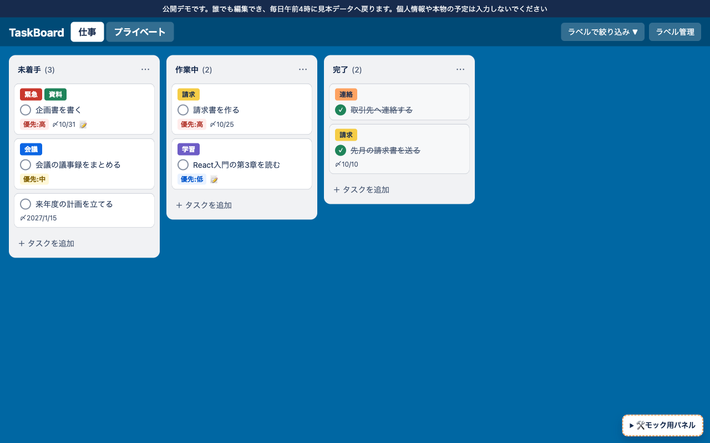

モックを自分で確かめるためのガイド
このページは、TaskBoard のモック（試作品）が画面設計書・機能一覧のとおりに動くかを、あなた自身が確かめるためのものです。先に「仕組み」をざっと読むと、どこを見ればよいかが分かりやすくなります。
- モックを開く：右上の「モックを開く」で別のタブに開きます。ウインドウを左右に並べると楽です。
- 上から順に試す：「3. 検証チェックリスト」の手順どおりに操作し、結果を「OK」「要修正」で記録します。まずは ★ まずはここ の13項目だけでも大丈夫です。
- 結果を送る：終わったら「結果をコピー」を押し、Claude のチャットに貼り付けます。「要修正」とメモの内容をもとに直します。
記録はこのブラウザにだけ保存されます。モックは再読み込みすると見本データに戻るので、何度でも最初からやり直せます。
このブラウザでは記録を保存できませんでした。ページを閉じると記録は消えます。
1. 5分でわかる TaskBoard
TaskBoard は「やること（タスク）」をカードにして、未着手 → 作業中 → 完了の3列に並べて管理するアプリです。「仕事」と「プライベート」の2つのボードを切り替えて使います。
ボード画面の各部の名前

1
2
3
4
5
6
7
8
9
10
11
12
13
- 公開デモの案内：いつも一番上に出る注意書き（F-54）
- ボードのタブ：「仕事」「プライベート」を切り替える。ダブルクリックで名前を変える（F-02, F-03）
- ラベルで絞り込み：選んだラベルの付いたカードだけ表示（F-44）
- ラベル管理：ラベルの追加・色や名前の変更・削除（S-05）
- カラム見出し：カラム名と、中にあるカードの数（F-05）
- 「⋯」メニュー：優先度順・期限順に並べ直す（F-23）
- ラベル：カードに付いた色付きの目印（F-40）
- 完了マーク（○）：押すと ✓ が付く。カードは移動しない（F-30, F-32）
- タイトル：カードを押すと編集モーダルが開く（F-11）
- 優先度・期限・📝：📝 は説明が書いてある印（R-08）
- ＋ タスクを追加：押したカラムに入るタスクを作る（F-10）
- 完了マーク済みのカード：✓・取り消し線・少しグレー（F-31）
- モック用パネル：確認用の道具。本物のアプリにはない
6つの画面
| 画面 | 何をする画面か | 開き方 |
|---|
| S-01 ボード画面 | カードを見る・動かす・✓を付ける・並べ直す・絞り込む | モックを開くと最初に出る |
| S-02 タスク作成モーダル | 新しいタスクを作る | カラム下の「＋ タスクを追加」 |
| S-03 タスク編集モーダル | タスクの中身を変える | カードを押す |
| S-04 タスク削除確認 | 本当に消すか確かめる | 編集モーダルの「削除」 |
| S-05 ラベル管理モーダル | ラベルを作る・変える・消す | 右上の「ラベル管理」 |
| S-06 ラベル削除確認 | 本当に消すか確かめる | ラベル管理の 🗑 |
「モーダル」は、画面の上に重ねて開く小窓のことです。開いている間は後ろの画面を操作できません。
2. 仕組み（からくり）を知る
動きを確かめるときに「なぜそうなるのか」が分かるよう、モックの中で起きていることを8つにまとめました。各項目の最後に、関係するチェック項目の番号を書いています。
1データは1か所、画面は毎回描き直す
あなたの操作→
新しいデータを作るstore.js→
画面を描き直すboard.js など
タスク・ラベル・ボードの情報は store.js の1か所にまとめて持っています。何か操作するたびに「データを新しく作り直す → 画面を全部描き直す」をくり返します。画面を直接いじらないので、見えている内容と中のデータがずれません。
たとえ：黒板の「元の表」を書き直してから、掲示板の貼り紙を全部貼り替えるイメージです。
本物のアプリでは、「元の表」は APIサーバーの向こうにあるデータベースになります。モックは表をページの中に持っているので、再読み込みすると見本データに戻ります（不具合ではありません）。
関係するチェック：A1
2並び順は「番号」で決まる
各タスクは「どのカラムにいるか（status）」と「上から何番目か（position：0, 1, 2…）」を持っています。D&D すると、移動元と移動先のカラムの番号を振り直します。削除すると、残りの番号が詰まります。
例：作業中が［請求書=0, React=1］のとき、企画書を2番目に入れる
→［請求書=0, 企画書=1, React=2］ 未着手のほうも番号が詰まる
関係するチェック：C5, D1〜D4
3「どのカラムか」と「✓」は別の情報
「どのカラムにいるか（status）」と「✓が付いているか（isCompleted）」は別々に記録しています。だから ✓を付けても完了カラムへは動かず、完了へ動かしても ✓ は付きません（決定事項 Q2）。「作業中だけど実は終わった」も表せます。
関係するチェック：E1〜E3
4保存のやり方は2種類
| 操作 | 保存のやり方 | 保存に失敗したら |
|---|
| D&D・✓・整列 | 先に画面を変え、裏で保存する | 元に戻して、赤いメッセージを出す |
| 作成・編集・削除・ラベル・ボード名 | 保存の返事を待ってから画面に反映。待つ間は「保存中…」でボタンを押せない | モーダルを開いたまま、入力を残してエラーを出す |
よく使う操作は軽く感じられるように先に動かし、作成などは「二重に登録される」「入力が消える」を防ぐために返事を待ちます（R-24）。モックでは、サーバーの代わりに0.3秒待つ真似をしています。モック用パネルの「保存を失敗させる」を使うと、失敗したときの動きを見られます。
関係するチェック：B4, I1〜I3
5整列は「ルールどおりに1回並べ直す」ボタン
| 整列 | 並ぶ順番 | 同じ値のとき |
|---|
| 優先度順 | 高 → 中 → 低 → なし | 期限の早い順 |
| 期限順 | 期限の早い順。期限なしは一番下 | 優先度の高い順 |
どちらの場合も、✓の付いたカードは一番下にまとめます（Q15）。並べ直した結果は「番号」として保存されるだけなので、そのあと D&D で自由に動かせます（Q9）。
関係するチェック：D5〜D7
6ラベルはボードごと、絞り込みは「見え方」だけを変える
ラベルは「どのボードのものか」を持っているので、仕事のラベルはプライベートには出てきません（Q12）。タスクは付いているラベルの番号の一覧（labelIds）を持っていて、ラベルを削除すると、全部のタスクからその番号を外します。
絞り込みはデータを変えずに、表示するカードを選んでいるだけです。隠れているカードがあると「どこに入れればよいか」が決められないため、絞り込み中は D&D・整列・タスクの追加を止めています（R-20）。
ラベル管理では保存ボタンを置かず、色や名前を変えるとすぐ保存します（Q22・R-32）。
関係するチェック：G2, G3, G5, H1〜H4
7入力チェックは2回
1回目：画面空なら「作成」を押せない・文字数で入力が止まる→
2回目：データを作るとき空白だけ・文字数・選べる値・件数の上限・重複
画面のチェックは、やろうと思えばすり抜けられます。そのため、データを作る側でもう一度確かめます。本物のアプリでは、2回目はサーバーで行います（N-12）。
関係するチェック：B2, B7, F4, G4
8モーダルとフォーカスの約束
- 外側の暗い部分をクリックしても閉じない（うっかり入力が消えるのを防ぐ）
- 「キャンセル」・×・Esc キーは、何も保存せずに閉じる
- 閉じたら、開く前に押したボタンに戻る（キーボードで使う人が迷わないように：N-21）
関係するチェック：B5, B6, J2, J3
モックと本物のアプリの違い
| モック（今回） | 本物のアプリ（これから作る） |
|---|
| データの置き場所 | ページの中。再読み込みで見本に戻る | データベース |
| 保存 | 0.3秒待つ真似 | APIサーバーに送って保存 |
| 他の人の変更 | なし（自分だけ） | タブに戻ったときに読み込む（R-27） |
| 毎日のリセット | 再読み込みで代わりにする | 毎日午前4時に自動（F-55） |
| モック用パネル | ある（確認用） | ない |
ファイルの役割
| ファイル | 役割 | たとえ |
|---|
index.html | 画面の骨組み（6画面の箱） | 建物の間取り |
css/style.css | 色・大きさ・並べ方 | 内装 |
js/data.js | 決まった値（カラム・色・上限）と見本データ | 最初から置いてある家具 |
js/store.js | データを持ち、作る・動かす・消す。入力チェックもここ | 帳簿係 |
js/ui.js | 部品づくり・エラー表示・モーダルの開け閉め | 道具箱 |
js/board.js | ボード画面の表示と、D&D・✓・整列・絞り込み | 掲示係 |
js/task-modal.js | タスクの作成・編集・削除確認 | 受付窓口 |
js/label-modal.js | ラベル管理と、ラベルの削除確認 | ラベル係 |
js/app.js | 起動と、モック用パネル | 開店準備 |
3. 検証チェックリスト
各項目の「やること」を試して、「こうなればOK」と同じなら OK、違ったら 要修正 を選んでください。違和感や「こうしてほしい」があれば、OK でもメモに書いてください。右上の番号（F-10 など）は、仕様書のどこに書いてあるかを表しています。
A. ボード画面の表示
-
モックを開く（または再読み込みする）
一瞬「読み込み中…」が出てから、「仕事」ボードが表示される。作業していた内容は見本データに戻っている
-
画面の一番上を見る
「公開デモです。誰でも編集でき…」の案内がいつも出ている
-
各カラムの見出しを見る
「未着手 (3)」のように、中のカードの数が出ている
-
いくつかのカードを見比べる
上から「ラベル」「○＋タイトル」「優先度・期限・📝」の順で出ている。設定していないもの（例：優先度なし）は出ない
-
「企画書を書く」と「来年度の計画を立てる」の期限を見る
今年は「〆10/31」、来年は「〆2027/1/15」のように年が付く
-
完了カラムのカードを見る
✓・取り消し線・少しグレーの背景になっている。文字は読める濃さ
B. タスクの作成（S-02）
-
「作業中」の下の「＋ タスクを追加」を押す
「タスクを作成」が開き、「カラム」欄が最初から「作業中」になっている。タイトル欄にカーソルがある
-
タイトルを空のまま、またはスペースだけ入れる
「作成」ボタンが押せない（薄くなっている）
-
タイトル・優先度・期限・ラベル（2つ）を入れて「作成」
モーダルが閉じ、作業中の一番下にカードが出る。件数が1つ増える。入れた優先度・期限・ラベルがカードに出ている
-
「作成」を押した瞬間のボタンを見る（0.3秒なので一瞬です）
一瞬「保存中…」になり、その間は押せない
-
途中まで入力して「キャンセル」。次に ×、次に Esc キーでも試す
どれでもモーダルが閉じ、タスクは作られない
-
モーダルの外側（暗くなっている部分）をクリックする
モーダルは閉じず、入力も消えない
-
タイトルに長い文章を貼り付ける
100文字でそれ以上は入らない（説明は1000文字まで）
C. 編集と削除（S-03・S-04）
-
カードのタイトルか、カードの空いている所を押す
「タスクを編集」が開き、今の内容が入っている。下に「削除」ボタンがある
-
タイトルを書き換えてから「キャンセル」
カードのタイトルは書き換える前のまま
-
編集モーダルで「カラム」を「完了」に変えて「保存」
カードが完了カラムの一番下に移る
-
編集モーダルの「削除」→ 確認で「キャンセル」
確認にタスク名が出ている。キャンセルすると編集モーダルに戻り、カードは残っている
-
もう一度「削除」→「削除する」
モーダルが全部閉じ、カードが消え、件数が1つ減る
D. ドラッグ＆ドロップと整列
-
「企画書を書く」をつかんで、作業中の1枚目と2枚目の間で離す
動かしている間、入る位置に青い線が出る。離すと作業中の2番目に入る
-
同じカラムの中で、カードを上や下へ動かす
離した位置に並び替わる
-
あるカラムのカードを全部ほかへ動かして空にし、そこへカードを1枚戻す
空のカラムにも入れられる
-
カードをつかんで、カラムの外（青い背景の所）で離す
カードは元の場所に戻る
-
「作業中」の「⋯」→「優先度順に並べる」（✓付きのカードがある状態で）
高 → 中 → 低 → なし の順。同じ優先度は期限の早い順。✓付きは一番下
-
どこかのカラムで「⋯」→「期限順に並べる」
期限の早い順。期限なしは一番下（✓付きはさらに下）
-
整列したあと、カードを D&D する
自由に動かせる（整列し直されたりしない）
E. 完了マーク（✓）
-
作業中のカードの ○ を押す。もう一度押す
1回目で ✓・取り消し線が付き、カードは作業中のまま。2回目で元に戻る
-
○ を押したときの様子を見る
編集モーダルは開かない
-
✓の付いていないカードを完了カラムへ D&D する
完了に移るが、✓は付かない
F. ボードの切り替えと名前
-
仕事でタスクを1つ作ってから「プライベート」タブを押す。また「仕事」に戻る
プライベートにはそのタスクもラベルも出ない。仕事に戻るとちゃんとある
-
「プライベート」タブをダブルクリック →「勉強」と入れて Enter
タブの名前が「勉強」になる
-
名前を変える途中で Esc。次に、名前を全部消して Enter
どちらも元の名前のまま
-
2つ目のボードの名前を「仕事」にしようとする
「もう一方のボードと同じ名前にはできません」と赤いメッセージが出て、元の名前に戻る
-
タブを一度押してから、キーボードの F2 キーを押す。名前を変えて Enter
名前の入力欄になり、確定すると名前が変わって、そのタブに枠（フォーカス）が戻る
G. ラベル（S-05・S-06）
-
「ラベル管理」を押す
今のボードのラベルだけが並び、「6 / 20 個」のように数が出ている
-
あるラベルの色を変える。名前を変えて Enter を押す
保存ボタンを押さなくても、すぐにカードのラベルにも反映される
-
ある名前を変えて、すぐ別のラベルの名前欄に移って文字を打つ
前の保存が終わっても、打っている途中の文字が消えない
-
すでにあるラベルと同じ色・同じ名前で「＋ 追加」
「色も名前も同じラベルがすでにあります」と出て、作られない。同じ色で別の名前なら作れる
-
カードに付いているラベルの 🗑 →「削除する」
確認に「n 件のタスクから外れます」と出る。削除すると、カードからもそのラベルが消える（カード自体は残る）
-
作成・編集モーダルでラベルを2つ以上選んで保存
カードに全部のラベルが並ぶ
H. ラベルで絞り込み
-
「ラベルで絞り込み」で「緊急」と「請求」を選ぶ
どちらかのラベルが付いたカードだけが表示される
-
絞り込み中のカラム見出しを見る
「(2/5)」のように「表示中の数／全体の数」になっている
-
絞り込み中に、D&D・「⋯」の整列・「＋ タスクを追加」を試す
どれもできない（＋は表示されない）。黄色い帯で「絞り込み中」と分かる。✓と編集はできる
-
絞り込み中にボードを切り替える
絞り込みが解除される
I. うまくいかないとき（モック用パネルを使う）
モックの右下「🛠 モック用パネル」を開いて使います。終わったら「保存を失敗させる」のチェックを外してください。
-
「保存を失敗させる」にチェック → カードを D&D する
いったん動いたあと元の位置に戻り、画面上部に赤いメッセージが出る
-
同じ状態で ○ を押す
一瞬 ✓ が付いたあと、元に戻る
-
同じ状態でタスクを作成する
モーダルは開いたまま、入力も残って、モーダルの中にエラーが出る
-
パネルで「サーバーに接続できない」を選ぶ
「サーバーに接続できません」と「再読み込み」ボタンが出る。画面は真っ白にならない
-
絞り込みをしてから I4 の状態にし、「再読み込み」を押す
「読み込み中…」のあと通常の画面に戻り、絞り込みは解除されている
J. 見た目と使いやすさ
-
ブラウザの幅をスマホくらいまで狭くする
ページ全体は横にはみ出さず、ボードの部分だけ横にスクロールできる
-
マウスを使わず、Tab キーで移動して Enter・Space で押してみる
今どこにいるか枠で分かり、作成・編集・✓などができる
-
キーボードでモーダルを開き、Esc で閉じる
開く前のボタン（またはカード）に枠が戻る
-
全体を眺める
Trello 風の見た目として違和感がない（色・文字の大きさ・余白で気になる所があればメモへ）
4. 理解度チェック
仕組みが分かっているか、答えを考えてから開いてみてください。
Q1. ✓を付けると、カードは「完了」カラムへ移る？
移りません。「どのカラムか」と「✓」は別の情報だからです（仕組み3・Q2）。
Q2. 絞り込み中に D&D できないのはなぜ？
隠れているカードとの順番が決められないからです。絞り込みは見え方を変えているだけで、データには隠れたカードも並んでいます（仕組み6・R-20）。
Q3. D&D はすぐ動くのに、作成は「保存中…」を待つのはなぜ？
よく使う操作は軽く感じられるように先に動かし、作成などは二重登録や入力の消失を防ぐために返事を待つからです（仕組み4・R-24）。
Q4. 再読み込みすると作ったタスクが消えるのは不具合？
不具合ではありません。モックはデータをページの中だけに持っているので、見本に戻ります。本物はデータベースに保存します（仕組み1）。
Q5. ラベルを削除すると、そのラベルが付いていたタスクはどうなる？
タスクは残り、ラベルだけが外れます（仕組み6・R-18）。
Q6. 優先度順に並べたとき、「高・✓あり」と「低・✓なし」はどちらが上？
「低・✓なし」が上です。✓の付いたカードは、優先度に関係なく一番下にまとめます（仕組み5・Q15）。
Q7. 「仕事」ボードで作ったラベルは「プライベート」でも使える？
使えません。ラベルはボードごとに別々です（仕組み6・Q12）。
Q8. タイトルが空でも作成できないのは、画面のチェック？データのチェック？
両方です。画面では「作成」を押せなくし、データを作るときにももう一度確かめます。本物ではサーバーで確かめます（仕組み7・N-12）。
5. 結果の送り方
- 下の「結果をコピー」を押します（右上のボタンでも同じです）。
- Claude のチャットに貼り付けて送ります。
- 「要修正」の項目とメモをもとに、モックと仕様書を直します。